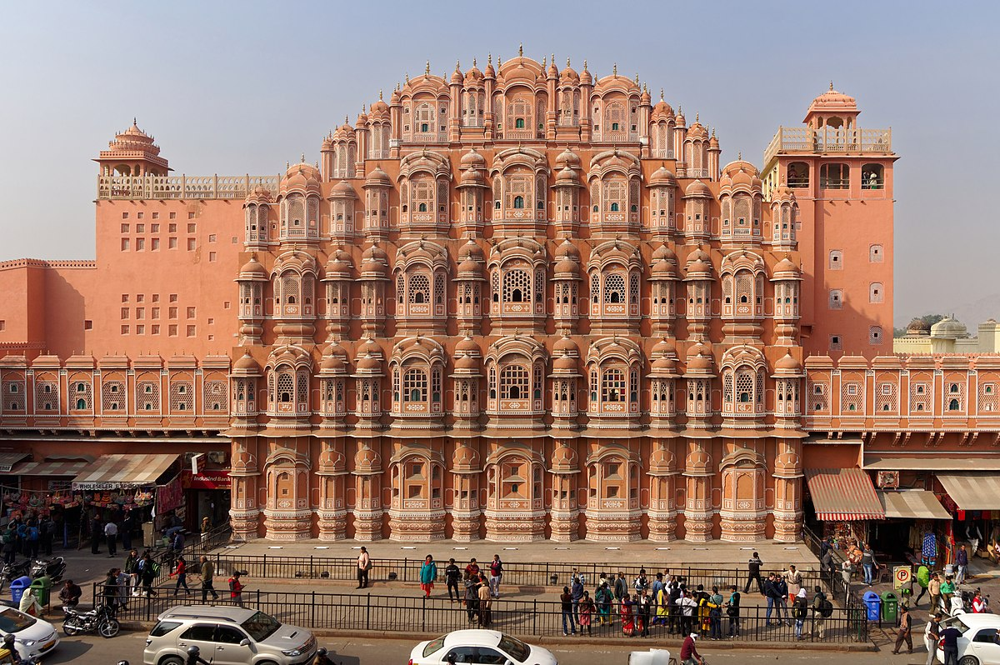
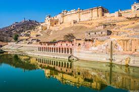
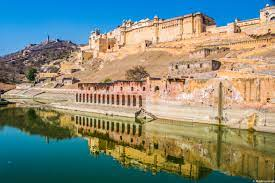

 

IMAGE1:-
The structure was built in 1799 byMaharaja sawai pratap singh , the grandson of Maharaja Sawai Jai Singh, who was the founder of Jaipur. He was so inspired by the unique structure of Khetri Mahal that he built this grand and historical palace.
IMAGE2:-
The Red fort is a historic fort in the city of Delhi (in Old Delhi) in India that served as the main residence of the Mughal Emperors. Emperor Shah Jahan commissioned construction of the Red Fort on 12 May 1638, when he decided to shift his capital from Agra to Delhi. Originally red and white, its painting is credited to architect Ustad Ahmad Lahori, who also constructed the Taj Mahal.
IMAGE3:-
It was commissioned in 1632 by the Mughal emperor shah jahan (reigned from 1628 to 1658) to house the tomb of his favourite wife, Mumtaz Mahal; it also houses the tomb of Shah Jahan himself.
IMAGE4:-
Amer Fort or Amber Fort is a fort located in Amer,Rajasthan, India. Amer is a town with an area of 4 square kilometres (1.5 sq mi)[1] located 11 kilometres (6.8 mi) from Jaipur, the capital of Rajasthan.